The three free projects where the hero meets the next section. The reader must get, in one look, that these are real tools they can use today, and which one is for them; the screenshot proves it is real, the domain says where to go.
Pick one: 1, 2 or 3, or mix (“2 with the prices of 3”).
Desktop
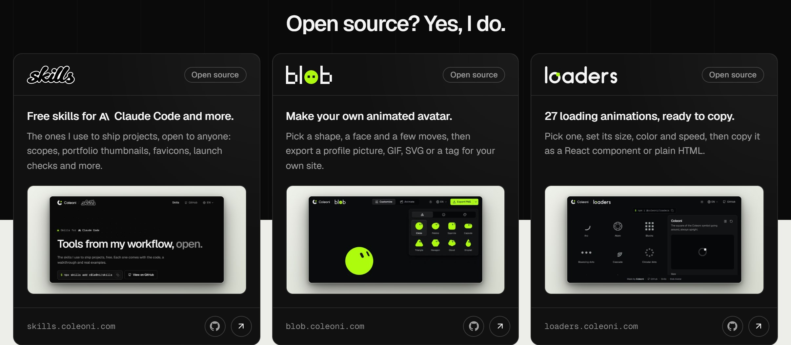
Phone
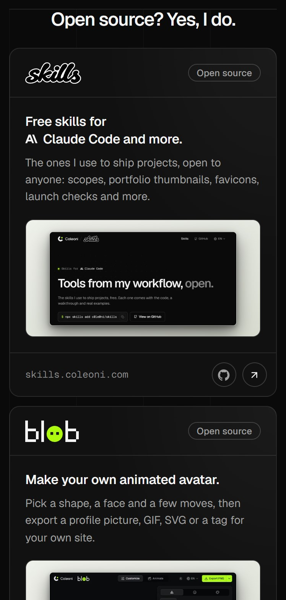
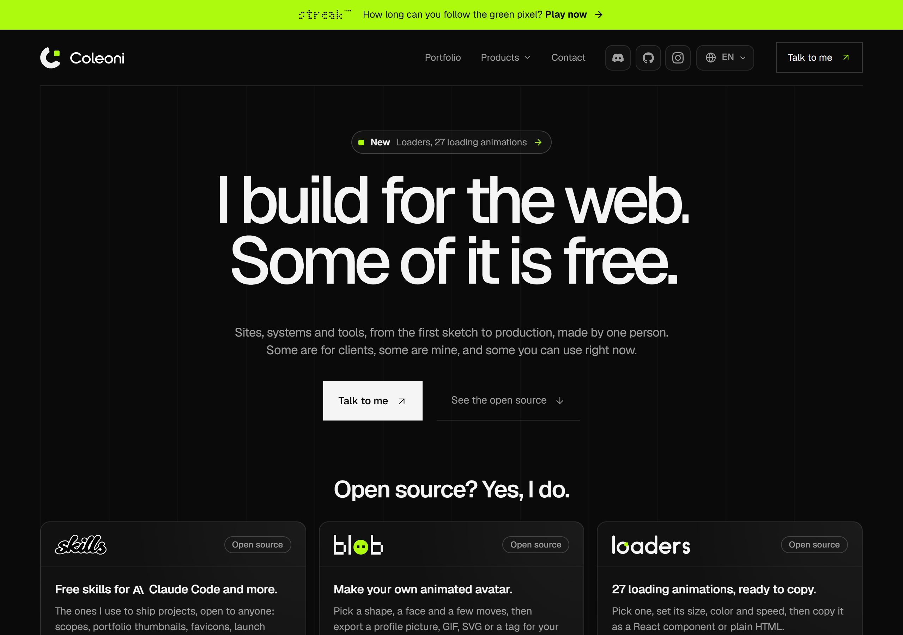
One dark panel, three rows like a table of contents: logo, the promise in large type, a small screenshot, the way out. Calm and editorial; gives up the screenshot as the hero of each card and drops the repeated "Open source" tag, since the title already says it.
Desktop
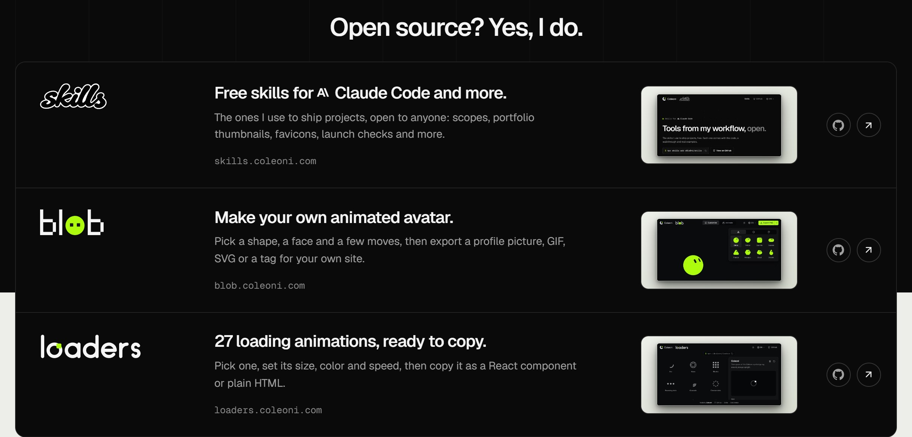
Phone
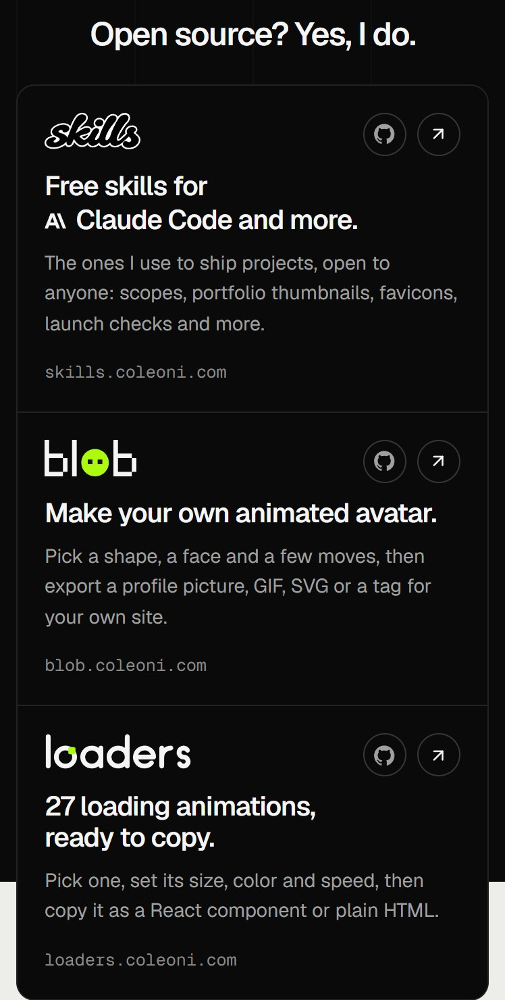
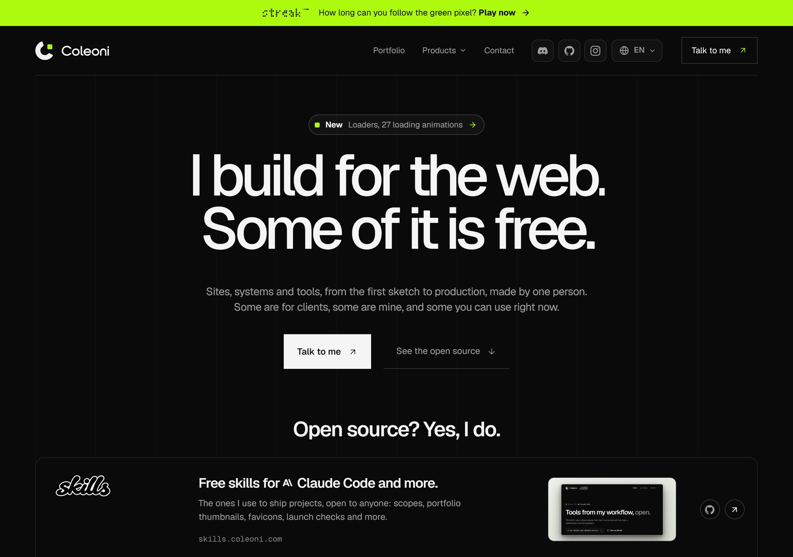
Loaders, the project the hero already calls new, gets a big card with its screenshot on lime; Skills and Blob sit beside it as compact cards with a thumbnail. One clear focal point, at the cost of the three being equals.
Desktop
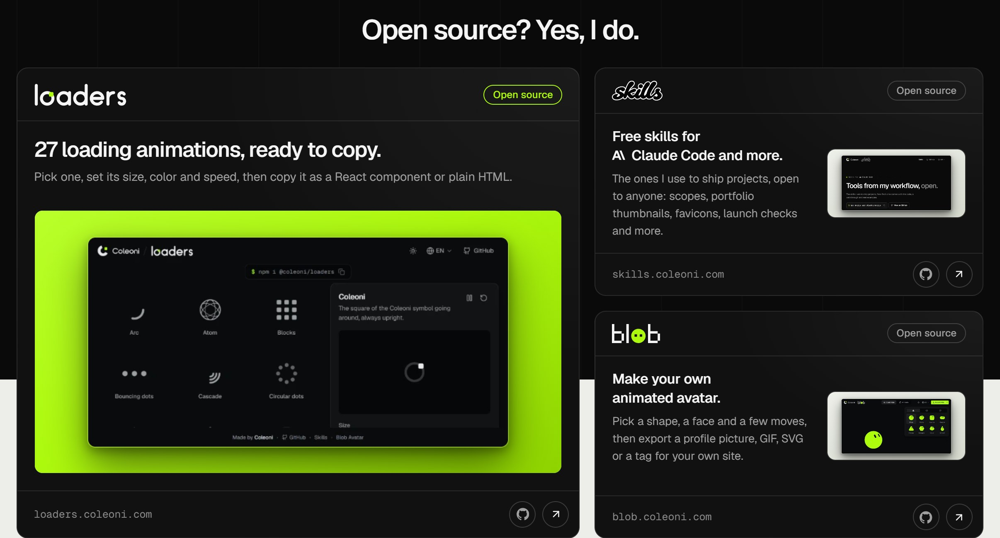
Phone
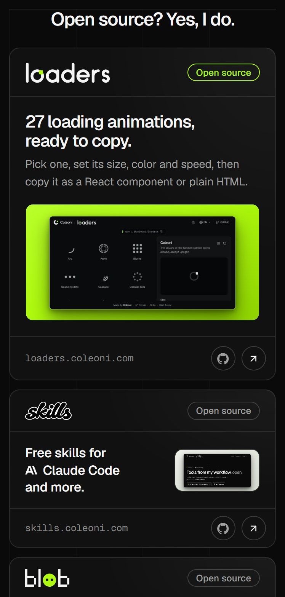
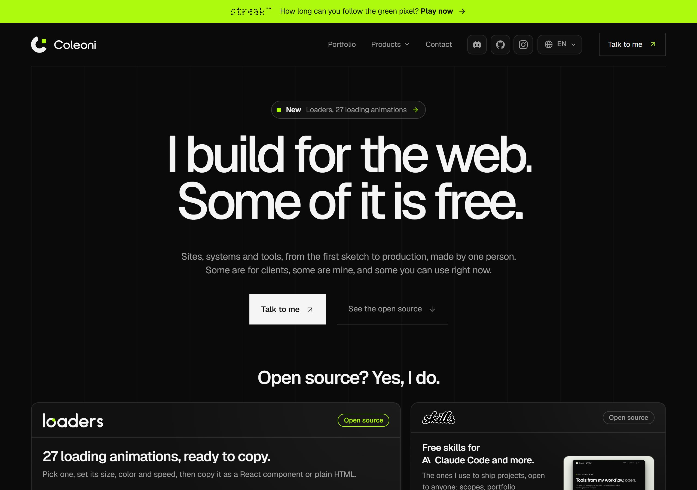
Three short paper tiles, screenshot on the left, logo and promise on the right, domain underneath: all three fit above the fold and read in a second. Fastest to scan; the one-line description goes, and the light tiles pull the eye away from the headline.
Desktop
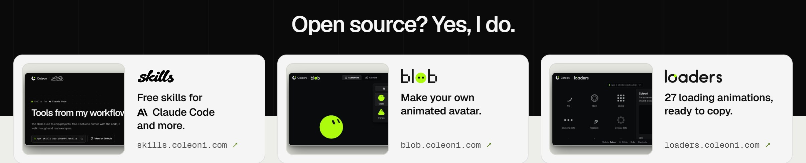
Phone
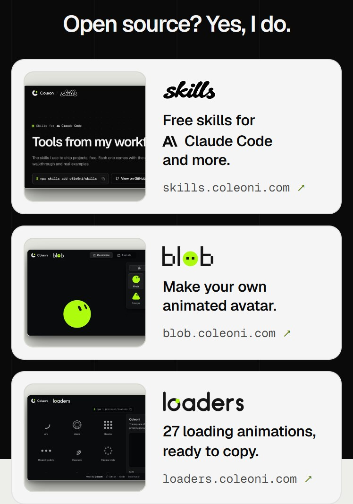
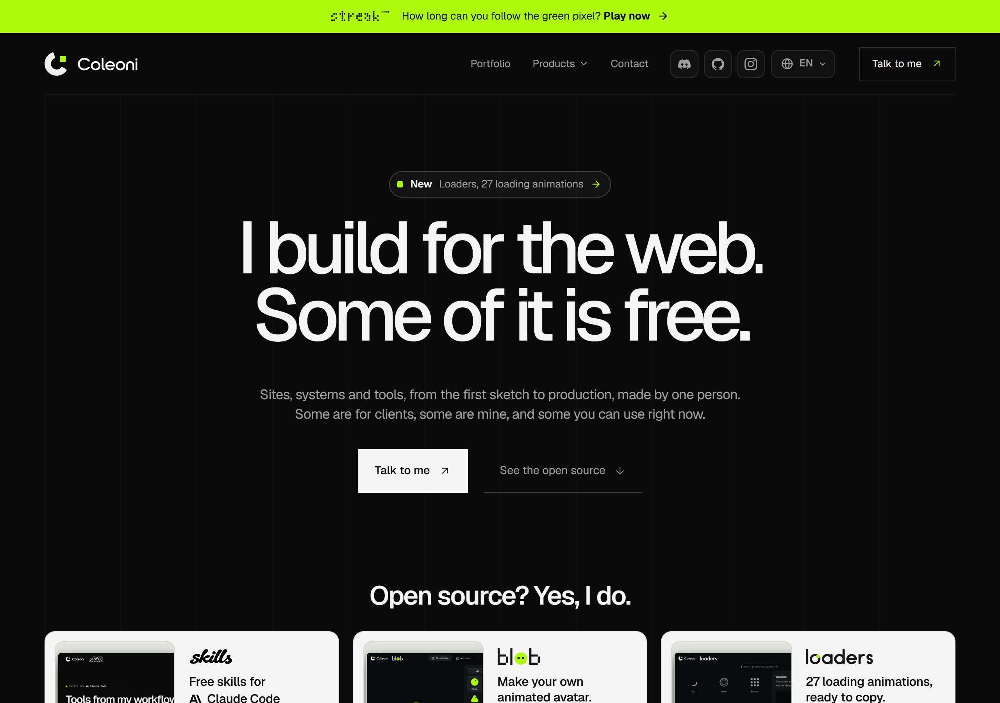
Made by /coleoni-variants · skills.coleoni.com